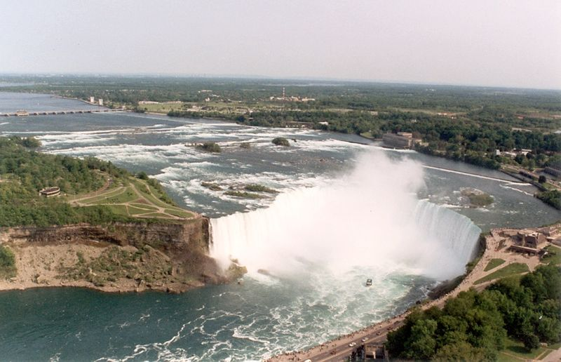

Ніагарські водоспади — це водоспад «Підкова» (англ. Horseshoe Falls), іноді ще званий Канадським водоспадом (англ. Canadian Falls), Американський водоспад (англ. American Falls) і водоспад «Фата» (англ. Bridal Veil Falls). Разом ці три водоспади формують південну частину ніагарської ущелини. Хоча перепад висот водоспадів порівняно невеликий, водоспади дуже широкі, і за об'ємом води, що проходить через нього, Ніагарський водоспад — найпотужніший у Північній Америці: близько 3160 тонн води спадає з них кожну секунду, близько 90 % яких проходить через водоспад «Підкова»[1].
Початок існування водоспаду відносять до Вісконсинського заледеніння, що закінчилось близько 10 000 років тому. Північноамериканські Великі озера і річка Ніагара — це результат існування останнього континентального льодовикового щита — Лаврентійського, що сповзав з території східної Канади. Льодовик рухався подібно до бульдозера: перемелюючи каміння і ґрунт, зрушуючи їх з місця, заглиблюючи русла річок і створюючи озера. У певних місцях відкладалися уламки порід (донна морена), примушуючи річки створювати нові русла. Геологи висловлюють припущення, що існує стара долина, похована під льодовиковими наносами приблизно в районі Велландського каналу (англ. Welland Canal).